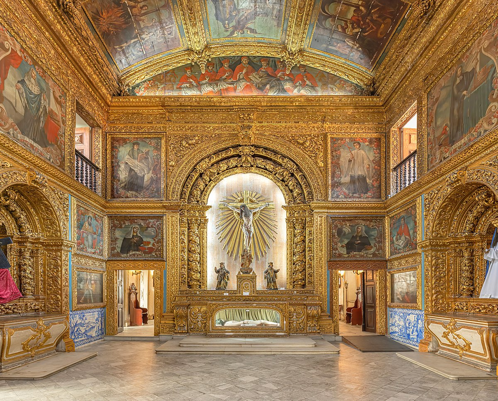
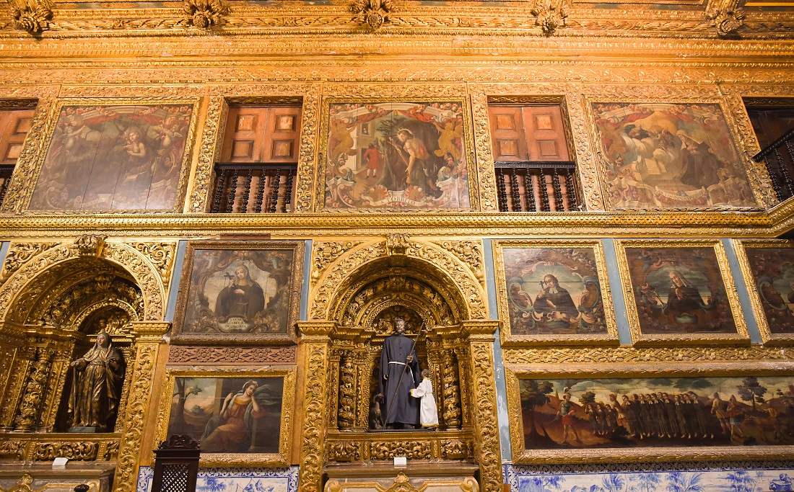

Seja bem-vindo! Conheça a Capela Dourada!
 A Capela Dourada, que recebe o nome formalmente de Capela dos Noviços da Ordem Terceira de São Francisco de Assis, é uma um dos principais pontos turísticos do Recife e uma das igrejas mais impressionantes, localizada no Convento de Santo Antônio.